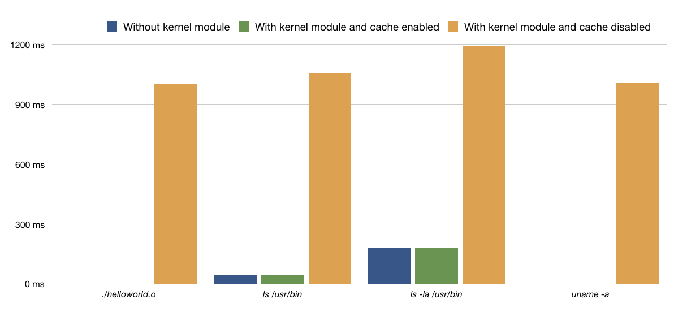

A P2P Reputation-based System for Blocking Malware at Kernel-Level
By: Giovanni De Costanzo | #InternetofThings #IoT #piface #piface digital 2 #pifaceio #Programmazione #Python #raspberry #raspberrypi

In this article on my personal blog, I’ll present my thesis work, done 2 years ago at University of Salerno with Prof. Francesco Palmieri as my supervisor. The idea behind this work came from me, and was immediately supported by my supervisor.
Introduction
Technological diffusion, in particular of computer systems, is rapidly growing in recent years. According to an annual report published by Cisco, in 2021 each person will have, on average, more than three devices connected to the Internet. However, this growth is not associated with an adequate user awareness of computer security issues. In fact, as the number of devices on the network grew, the amount of sensitive data, online banking services and messaging systems also increased, attracting the attention of computer crime. In this scenario, the risk of fraud, digital theft and privacy violation is always around the corner and constantly keeps the experts busy, who try to find new countermeasures every time. Nowadays, one of the main issues in computer security is undoubtedly represented by malware, a term which identifies any software created with the intention of causing several different types of damage within the system in which it is executed. The first malware has already spread since the 1980s. Over the years, malware have become more complex, so they can be classified into different categories, such as, worms, trojans, spyware, adware, rootkit, ransomware, etc. In particular, ransomware are having a great impact in the media. Consider for example the WannaCry ransomware, which brought several organizations to their knees in various countries, demanding the payment of a ransom in Bitcoin. Another malware that has been much discussed in recent years is Stuxnet, developed in 2009, considered one of the first cyber-weapons. It has been created to hinder the Iranian nuclear program. However, the spread of this malware was not controlled, and it began to infect also devices outside the nuclear plants. This case brings to our attention the fact that a malware is no longer a danger only for simple personal computers but could potentially trigger a cyber war.
Contribution
The existing security mechanisms and tools are not always effective in identifying or stopping the malware actions in a timely manner. In this work we design and implement a system that is able to block any malicious software, based on its reputation, before it can cause damage to the system. In the case of ransomware, in fact, it becomes of crucial importance to prevent the massive execution of the malicious payload, since most likely it would cause the loss of data on many victim devices. The main idea underlying our proposal is to create a robust and reliable collaborative system, based on a simple user reputation mechanism, which enables to collect reports concerning the genuineness of a given software, with the aim of determining whether to allow its execution or not.
In detail, this work introduces a whitelist-based approach that, like other existing solutions, defines what is safe to execute, blocking everything else. It involves the use of a kernel module, operating at the runtime system level, that intercepts the system calls necessary for the execution of a file, verifying its reliability through a simple and lightweight but extremely robust reputation system available through a fully distributed interface. In detail, each executable file is identified within the system by a value calculated through a cryptographic hash function. Such a value will be used as a key within a Kademlia Distributed Hash Table (DHT) that makes reliability scores available to individual runtime systems in a fully distributed and replicated way. Moreover, each executable is associated with a score, updated according to the reports made by registered voluntary users, that is used to classify such executable as reliable or malicious. Again, each contributing user has a reputation that varies based on the number of correct reports he made, and which determines the weight given to reports made by such user. We remark that in the proposed solution only a central entity can write on the Kademlia DHT nodes, collect the users’ reports and send the signed updated scores. Each runtime system can check the genuinity of such scores by verifying them through against a traditional Public Key Infrastructure (PKI). Experimental results show that the latency introduced by the proposed system is acceptable.
Reputation systems and their problems
The concept of reputation concerns the credibility an individual has within a social community. Having a good reputation allows a person or a software to appear credible and reliable in the eyes of society. On the Internet, one of the main causes of bad reputation is the publication of false or inaccurate content, i.e., reports, reviews, etc. This is a serious problem, since almost anyone has the possibility to access the Web and publish, without any particular technical knowledge, false or untrusted material or false information. In recent years various attempts have been made to create systems capable of obtaining an automated estimate of the reputation of an entity in the Internet. Some common uses of these systems can be found on e-commerce websites, such as eBay or Amazon, or in online consulting communities, e.g., Stack Exchange. Therefore, a reputation system allows users to evaluate each other within an online community, in order to build trust through reputation. The fundamental idea is to allow the parties to evaluate each other, for example after the conclusion of a transaction, and to use the aggregated votes to obtain a trust or reputation score, which can help the other parties to decide whether or not to carry out transactions with that party in the future. A natural consequence of these systems is that they provide an incentive for good behavior, and therefore tend to have a positive effect on market quality.
Further areas in which reputation mechanisms find scope of application are the following:
- Web search engines (e.g., PageRank);
- Developer community (e.g., StackOverflow);
- Internet security (e.g., TrustedSource);
- E-mail (e.g., Vipul’s Razor, used for spam filtering);
- Academia (e.g., h-index of a researcher).
In order for a reputation system to work effectively, the following three properties must be strongly taken into account. In detail, each entity should:
- Have a long life and create reliable expectations about future interactions;
- Capture and distribute feedback on previous interactions;
- Use feedback to drive trust.
These three properties are of paramount importance to build reliable reputations, and everything revolves around a fundamental element, which is user’s feedback. We remark that although several attempts have been made to build reputation systems that are not based on feedback, in the state of the art the feedbacks still represent the basis of a reputation system. However, feedbacks may bring up three main problems:
- Reluctance of users to provide feedback when this is not mandatory. If there is a large flow of interactions in an online community, but no feedback is collected, the trust and reputation environment cannot be formed;
- To get negative feedback from users, who are conditioned by several factors, such as fear of retaliation. In fact, when feedback is not anonymous, many users are afraid of receiving a negative feedback in turn;
- To elicit honest feedback from users. Although there is no concrete way to establish the truthfulness of honest feedback in a community, new users will be more likely to leave honest feedbacks.
Other pitfalls in reputation systems can include identity change and discrimination. Also in this case it is necessary to adjust user actions to obtain accurate and consistent feedbacks.
Attacks on Reputation Systems
Reputation systems are generally vulnerable to certain types of attacks, which can be classified based on the attacker’s goals. However, depending on the context and the type of attack, it is possible to apply proper defense mechanisms. The main attacks that can be directed towards a reputation system are the following:
- Self-promoting Attack: the attacker increases his reputation in a distorted way. An example is the Sybil Attack, where the attacker subverts the reputation system by creating a large number of pseudonyms and subsequently using them to gain a disproportionate influence.
- Whitewashing Attack: some system vulnerabilities are exploited to update the reputation of a user. Other types of attacks can be combined with the whitewashing attack to make it more effective.
- Slandering Attack: the attacker reports false data to lower the reputation of certain users.
- Denial of Service Attack: this attack, by using Denial of Service (DoS) attacks, prevents the spread of reputation values in the systems.
- Man in the Middle: an attacker could intercept the traffic and tamper with the feedback sent by other users.
A Reputation-Based System for Malware Detection: A Technical Framework
Current malware analysis techniques cannot deal with the action of new malicious software (i.e., 0-day), which has not yet been analyzed and detected. Therefore, it is clear that there is the need for preventive defense measures, to avoid the initiation of any harmful action within a system, as it could be the encryption of data by a ransomware. The main problem affecting most of the existing protection mechanisms is that they rely on a negative-based model (blacklist), that is, such mechanisms define what is dangerous, while implicitly letting everything else pass. Conversely, the main idea behind our proposal is to block, at the operating system level, the execution of any unknown software. The proposed system uses a positive-based model (whitelist), which defines what is allowed to pass, blocking everything else. Furthermore, we formulate a model for software classification, based on the “genuine” or “malicious” behaviors of the software. The proposed model allows the operating system to determine if it can execute a certain software. However, we remark that given the enormous amount of existing software, it is almost impossible to perform the classification by a single individual or a single entity. For this reason, the classification model we propose is based on user collaboration. In this way, over time, entire communities of users can contribute to the software classification process, and this can be an invaluable support for the various companies that are involved in malware analysis.
The Model
In the proposed model, for each executable file, a hash value is calculated, by which this file will be uniquely identified within the system. Each unclassified executable file has an initial reliability score value which is equal to 0. When the reliability score reaches a value greater than 1, then such executable is classified as reliable; on the other hand, if the reliability score value becomes less than −1, the evaluated executable is considered as malicious. Thus, we have a “guard range” [−1, 1] in which we have no sufficient information to effectively trust its execution and need to ask the interested users for its permission to execute. The score of each executable file is determined by users registered to the system, who contribute by sending reports concerning the reliability of such file. Of course, such users may be human entities or automatic malware checkers operating on a specific host.
1) Weaknesses and Improvements to the Basic Model: It is necessary to make some considerations on the aforementioned basic model that could be vulnerable to several kind of attacks. For each of these attacks, we show how it can be mitigated or sometimes completely avoided.
- Bad Mouthing Attack: A dishonest user could make incorrect reports to increase the score of a malicious executable file or damage the score of a reliable executable. To mitigate this issue, we introduce a reputation model for registered users. In such a model, the reports are weighed based on the reputation of each user, which can increase or decrease depending on the number of correct or incorrect reports such user has given. However, we remark that a malicious user could decide to carry out a certain number of correct reports, in order to increase his reputation, before making a dishonest report. To discourage this behavior, users who make incorrect reports are penalized by the model, by decreasing their reputation in a proportional manner. This means that the higher the user’s reputation, the greater the decrease in the case of making an incorrect report.
- Sybil Attack: Malicious users could subvert the system by registering to such system a disproportionate number of pseudonyms. It is important to point out that many users with a low reputation could still alter the score of an executable file. To overcome this problem, the user registration process makes use of digital certificates, issued by a Certification Authority (CA) for the verification of user identity. This means that the system registration process is controlled, and no user will be able to register several times using different pseudonyms.
- Man in the Middle Attack: An attacker could decide to intercept and tamper the reports of other users, for the purpose of altering the score of an executable file or damaging the reputation of an honest user. To prevent this type of attack, all the communication between the server that collects the reports and the users belonging to the system takes place by using encrypted connections. In addition, any store and lookup access to the P2P frontend repository is protected by digital signatures, ensuring integrity of all communications with Kademlia nodes.
- Denial of Service Attack: Centralized systems are typically vulnerable to Denial of Service (DoS) attacks; distributed systems, on the other hand, are usually less vulnerable if sufficient redundancy is used, so that incorrect behavior, or the loss of some participants, will not affect the functioning of the entire system. Therefore, the proposed solution is based on a decentralized front-end architecture based on Kademlia P2P overlay that interfaces the kernel module performing runtime checks. Such interface is the most critical element potentially exposed to DoS, so that the use of a Kandemlia infrastructure for storing reliability information, can effectively mitigate the effects of these attacks. Indeed, the algorithm used by Kademlia nodes to record each other’s existence is able to resist to the most common DoS attacks.
In light of these observations, we improve and extend the basic model described above, by providing it with a user reputation mechanism which works as follows. Each new user joining the system has an initial reputation value equal to 0.5 and such a value can fluctuate from a minimum of 0 to a maximum of 1. Again, a user whose reputation falls below 0.01 will no longer be able to make reports. The reputation of each user is used to weigh the reports he made, that is, the more correct reports a user makes, the more his reputation grows; on the other hand, as the number of erroneous reports increases, the reputation of the user decreases. To determine whether the report concerning an executable file is correct or not, the overall score associated with such executable must reach a value that can be classified as reliable or malicious. For example, if the score related to an executable file becomes reliable, all the users who have made a positive report for such file will see their reputation grow. On the contrary, users who have made a negative report, will see their reputation decrease. Moreover, once an executable file has been classified as reliable or malicious, subsequent reports made by other users will increase (or decrease) the score further but will not change the reputation of such users. We have made this choice since a malicious user could send positive reports for already classified executable files, in order to easily increase their reputation. We remark that the score related to an executable file is not updated immediately, upon the receipt of a single report made by a user, but at the end of a fixed time window. More precisely, the proposed system collects the reports received within a fixed time window and, when such a window expires, it calculates a weighted average which will be added to the executable file score.
2) Formalization of the Improved Model:
The model described above, operating according to a time-slotted logic with fixed time slots of length 


![[0,1]](https://s0.wp.com/latex.php?latex=+%5B0%2C1%5D+&bg=ffffff&fg=000&s=0&c=20201002)


Let
Considering 

Again, the weighted average of the reports, relative to an
executable file

where 


When the ![[-1,1]](https://s0.wp.com/latex.php?latex=+%5B-1%2C1%5D+&bg=ffffff&fg=000&s=0&c=20201002)


![r_u(t + T) = \begin{cases} \lceil r_u(t) + \Delta_u(t)\rceil^1 & \quad \text{if } \sigma_e(t + T) \in [-1,1] \text{ and } \sigma_e(t) \notin [-1,1] \\ \lceil (1 + a)r_u(t) \rceil^1 & \quad \text{if } (\sigma_e(t + T) \notin [-1,1] \text{ and } \sigma_e(t) \in [-1,1]) \text{ and } (\nu(s_e^u) = \nu(\sigma_e(t + T))) \\ (1 - b)r_u(t) & \quad \text{if } (\sigma_e(t + T) \notin [-1,1] \text{ and } \sigma_e(t) \in [-1,1]) \text{ and } (\nu(s_e^u) \ne \nu(\sigma_e(t + T))) \end{cases}](https://s0.wp.com/latex.php?latex=+r_u%28t+%2B+T%29+%3D+%5Cbegin%7Bcases%7D+%5Clceil+r_u%28t%29+%2B+%5CDelta_u%28t%29%5Crceil%5E1+%26+%5Cquad+%5Ctext%7Bif+%7D+%5Csigma_e%28t+%2B+T%29+%5Cin+%5B-1%2C1%5D+%5Ctext%7B+and+%7D+%5Csigma_e%28t%29+%5Cnotin+%5B-1%2C1%5D++%5C%5C+%5Clceil+%281+%2B+a%29r_u%28t%29+%5Crceil%5E1+%26+%5Cquad+%5Ctext%7Bif+%7D+%28%5Csigma_e%28t+%2B+T%29+%5Cnotin+%5B-1%2C1%5D+%5Ctext%7B+and+%7D+%5Csigma_e%28t%29+%5Cin+%5B-1%2C1%5D%29+%5Ctext%7B+and+%7D+%28%5Cnu%28s_e%5Eu%29+%3D+%5Cnu%28%5Csigma_e%28t+%2B+T%29%29%29+%5C%5C+%281+-+b%29r_u%28t%29+%26+%5Cquad+%5Ctext%7Bif+%7D+%28%5Csigma_e%28t+%2B+T%29+%5Cnotin+%5B-1%2C1%5D+%5Ctext%7B+and+%7D+%5Csigma_e%28t%29+%5Cin+%5B-1%2C1%5D%29+%5Ctext%7B+and+%7D+%28%5Cnu%28s_e%5Eu%29+%5Cne+%5Cnu%28%5Csigma_e%28t+%2B+T%29%29%29++%5Cend%7Bcases%7D+&bg=ffffff&fg=000&s=0&c=20201002)
where:


Reasonable values for the two coefficients of proportionality could be 


Finally, if the value
System Architecture
The architecture of the proposed solution involves the use of a distributed hash table and a kernel module for trapping execution, which is loaded by the operating system. The aim of the overall model is to classify a very large number of executable files and to manage the numerous reports coming from users, regarding the score of the executable files they are going to execute. However, it is important to remark that the number of such requests is potentially enormous, since the system could send a request for every file it tries to execute. For this reason, it is not appropriate to make reliability scores available by means of a centralized service architecture, since it could represent a performance bottleneck as well as a Single Point Of Failure (SPOF) and hence it could be easily vulnerable to DoS attacks. Inspired by these design criteria, our model is based on a hybrid architecture, composed of a Central Server for collecting users’ reports and a DHT based on Kademlia, for handling the interface to the scoring system in a fully distributed and replicated way. Kademlia employs a recursive algorithm for node lookups, routing queries and locating nodes within a topology driven by a XOR-based distance metric between points in the key space. Since such metric is fully symmetric, each participant node receives lookup queries from exactly the same distribution of nodes contained in their routing tables. As a consequence, lookup operations return with an extremely high probability a key-value pair stored in 


System architecture.
In detail, the DHT stores the key-value pairs, consisting of the hash of an executable file and its associated score, together with a timestamp information. We remark that in our proposal, the nodes of the P2P overlay allow the writing only to the Central Server, which represents an authoritative entity, while anyone can read and request the score for an executable. The limitation in writing is guaranteed by the use of a digital signature scheme, used whenever a (hash, score) key-value pair is sent for storage on DHT. However, only signing this pair could make the system vulnerable to replay attacks. Indeed, any attacker could be able to capture a message sent on the P2P overlay, and then read the key- value pair and its digital signature. Again, the attacker could keep this message and re-send it later, thus succeeding in restoring the old score associated with an executable file. To overcome this problem, we use a time stamp indicating the expiration time for a specific message. More formally, let 


where signature is computed by Eq. as follows ( ∥ denotes the concatenation symbol ):

Within the up message, hash represents the key, while the triple (score, timestamp, signature) denotes the value to be stored in the DHT, respectively. The use of the stored signature allows an accessing entity to check the integrity and genuinity of any entry stored on the DHT, by using the public key
User reputations are kept on the Central Server, which updates them and establishes who is allowed to send reports. It is important to emphasize that the separation of roles between the Central Server and the Kademlia DHT overlay guarantees that, even in the event of a server failure (due to an attack or technical problems), users’ operating systems are always able to determine whether an executable file is reliable or malicious, since this information can be obtained by the DHT. Again, we remark that the use of a DHT ensures reliability and availability of the data at any time, since Kademlia is known to provide provable consistency and performance also within fault-prone environments . Finally, the software layer on the user system, used to check the executable file before its execution, is implemented through a kernel module. The main idea is to hijack the execve system call. Hence, before any file execution, the kernel module calculates the SHA-256 hash of such a file and verifies its score, by sending a request to the DHT. If the file is classified as reliable, then it is executed normally, otherwise, if it is classified as malicious or has not yet received reports, the kernel module will prevent execution until it is not been classified as reliable. However, this design has the following two drawbacks:
- Latency: every execve system call needs to query the DHT before it can be executed. Obviously, this can cause system performance degradation also if Kademlia ensures response in a logarithmic time on the number of nodes, that have enough knowledge and flexibility to route queries through low-latency paths. In addition, Kademlia issues parallel asynchronous queries for mitigating the effects of timeout delays from failed nodes.
- Mandatory connection to the network: to determine if a file can be executed, an Internet connection is required to perform a verification on the Kademlia network. Thus, a disconnected system would be unusable.
To overcome such two limitations, we introduce a local cache, where the scores for each executable file are stored. In detail, this cache initially contains only the hashes of all the executable files belonging to the operating system and our system assigns to these files permanent execution permissions. In this way, a normal use of the system is still possible even without an Internet connection. In addition, for each executable file for which a check is performed on the DHT, the relative score is temporarily stored in the cache. By doing so, it is possible to avoid an access to the DHT for each further execution of a file. Thus, when a valid entry is present within the cache, such entry is used to drive the execution process. However, cache entries have a limited lifetime (that can be typically chosen as the length of the time slot T ) and all the cached data, when a connection is available, are automatically refreshed at their expiration through a new access to the DHT, so that updates to reliability scores are taken into account without affecting users’ execution performances. Notice that though this solution does not completely solve the latency problem, since there will still be a search in the cache for each execution, we can certainly say that the times are considerably reduced. Furthermore, a user with root privileges will be able to run new trusted files by adding them to the local cache (i.e. new compiled program files, or copied from trusted source).
The figure below shows a diagram which outlines how the kernel module works within the proposed system.

Kernel module operation scheme.
Architecture Design and Implementation
In this section we outline the design and implementation aspects of a proof of concept reflecting the architecture presented above. More precisely, in this section we focus on the design and implementation of both the kernel module for blocking the execution of malicious executable files and of the verification system accessible through the Kademlia overlay DHT.
The PoC (Proof of Concept) code is publicly available on my GitHub, and has been made on Ubuntu 12.04.1 OS with kernel version 3.2.0-29-generic. The choice is due to the ease with which it was possible to perform the hijacking of a system call, as explained below.
Execution Trapping Kernel Module
The implemented kernel module is characterized by the following three main functionalities:
- Hijacking of the execve system call, through hooking of the system call table;
- SHA-256 hashing of the executable file;
- Checking the executable’s score, by connecting to the Kademlia network.
1) Hijacking: In order to hijack the execve system call, we use a fairly common technique, namely, the hooking of the system call table. In detail, the processes in the user space call a series of interrupts to the kernel space, which are stored in a predefined table during the Linux system initialization process. The pointers to different interrupt management functions are then stored. The idea is to appropriately manipulate these pointers within the table, in order to insert the desired actions. At the end of the added actions, the action of the original system call is then restored, to avoid crashes or anomalies in the operating system.
2) Hashing: Once the system call has been hijacked, we can add the piece of code we want to execute. In our case, this code is inserted into the new execve function. Our goal is to check the reliability of a given file before it is executed. The system then calculates a SHA-256 hash of that file to verify its relative score. If the executable file is considered as reliable, then the original system call is executed, thus guaranteeing the normal behavior of the system. Otherwise, the system call will not be executed.
3) Verification: The final step is to verify the reliability of the executable file, by using the calculated hash. The verification is carried out by connecting to the Kademlia network or looking inside the local cache if it is not the first execution of the file. However, it is important to point out that for the development of a kernel module, not all the standard libraries normally used in user space C programming are available. To overcome this limitation, we use a local socket, which connects the kernel module with an application executed in user space. More precisely, we use an AF UNIX connection type, which allows the communication between a client and a server running on the same host, without the need to have an IP address. In detail, for the bind operation it is used a file descriptor, which points to a file within the local file system. Thus, the kernel module acts as a client, connecting to the application interfacing with the DHT and managing the local cache, executed in user space, which acts as a server (i.e., a daemon process) and waits for connections. When the kernel module makes a request to the server, it receives a Boolean value through which it determines whether or not it can execute the file.
Kademlia
For the realization of the DHT we started from an already existing implementation, written in Python and available on GitHub. In this section, we focus on the changes made to this existing code. The goal of our Kademlia implementation is to allow the write operation on the nodes only to a single authoritative entity. This is achieved through the use of a digital signature scheme. In detail, all nodes know the public key of the TTP and can verify the signature of an incoming store request message as well as the authenticity of a retrieved value. On the other hand, only the Central Server holding the private key is able to write on the DHT nodes. The changes on the Kademlia implementation were carried out within the STORE and FIND functions, where each Kademlia node, before storing the content, checks the signature and the timestamp, thus ensuring the authenticity of the message and the security with respect to Replay attacks. Analogously any lookup operation within the DHT before returning results performs a check of the aforementioned signature fields by using the public key of the TTP.
Experimentation and Results
In this section we provide implementation details about the proof of concept developed to assess the effectiveness and the performance of our proposal. Such assessment has clearly shown that the framework does not significantly impact neither the runtime performance of users’ executions nor the overall operating system activity.
The Proof of Concept (PoC) code is publicly available on GitHub, and has been made on Ubuntu 12.04.1 OS with kernel version 3.2.0-29-generic. The choice is due to the ease with which it was possible to perform the hijacking of a system call.
Execution test
As a sample untrusted executable, we created and compiled the “Hello World” C program shown below:
#includeint main() { printf ("Hello World! \n"); }
Since this program never executed, its hash is not present neither in the local cache nor on the DHT. Thus, such a program must not be executed by the system once the kernel module is loaded. As additional sample trusted executables we used the /bin/ls and /bin/uname standard Linux commands, whose reliability score has been pre-asserted on the DHT.
System performance
To evaluate the performance of our proposed framework, we analyzed the execution times of the aforementioned programs before and after loading the kernel module, as well as when the reliability information is already located in the local cache or it is yet in the DHT, in order to appreciate the latency introduced by both the caching mechanism and DHT access. The tests were carried out by means of a virtual machine running on an external hard drive at 5400 RPM, connected to the host system via USB 3.0. The resources assigned to the virtual machine are 1 GB RAM and a single core of the Intel Core i7 processor at 2.2 GHz. The total elapsed time necessary to execute the sample applications with and without using the kernel module, and when information is already store in the cache or need to be accessed on the DHT, measured through the Linux time command is shown in the table below, where average values from 10 runs have been reported.
Execution time of some programs (in msecs) with and without Kernel Module execution Trap and DHT access
We can appreciate that when the information is successfully cached, the average latency introduced by the execution of a program by the kernel module is negligible. Therefore, after the first execution of a file, which requires the connection to the Kademlia network and hence takes a longer time, due to both access to the P2P overlay and signature checking, all the following runs are impacted in a very limited way, respect to the enormous advantages introduced in terms of the overall system security.
Conclusion
We presented a novel lightweight solution to deal with unknown malware execution. Unlike most of the existing protection mechanisms, which are based on the concept of blacklists, this work relies on a whitelist-based approach, which is more conservative and can be summarized by the aphorism “prevention is better than cure”. We have realized the system architecture according to a hybrid logic and coupled it with a component that manages the reputation of users who contribute to the malware classification. The proposed system guarantees data persistence, that is, the availability of information even in the event of malfunctions or attacks. Furthermore, in this work we describe how to prevent different types of attacks that can subvert the reputation of the system. Finally, we show that the latency introduced by our system for the execution of a given file is acceptable, due to the use of a local cache.
The presented system, surely brings limits of use on Desktop OS, due to the enormous number of runned applications, and for the new ones installed. However it represents an interesting and effective solution for server systems, or embedded systems for IoT.
About Giovanni De Costanzo

My name is Giovanni De Costanzo and I'm a Sr.Research Engineer at Malwarebytes. I'm a geek, passionate about all the tech world since early age.